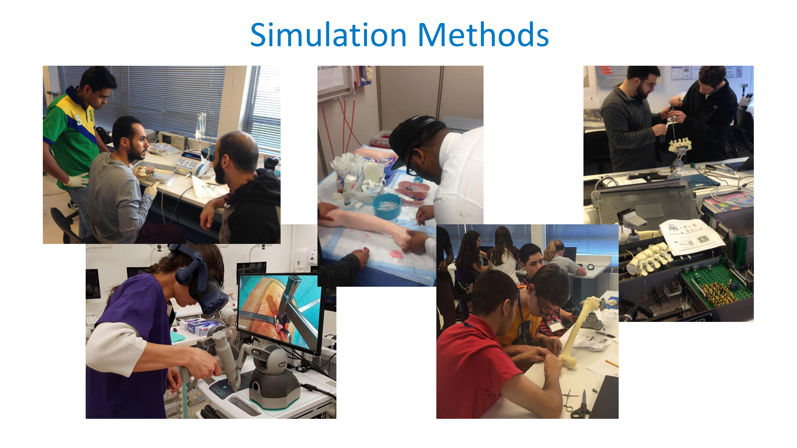
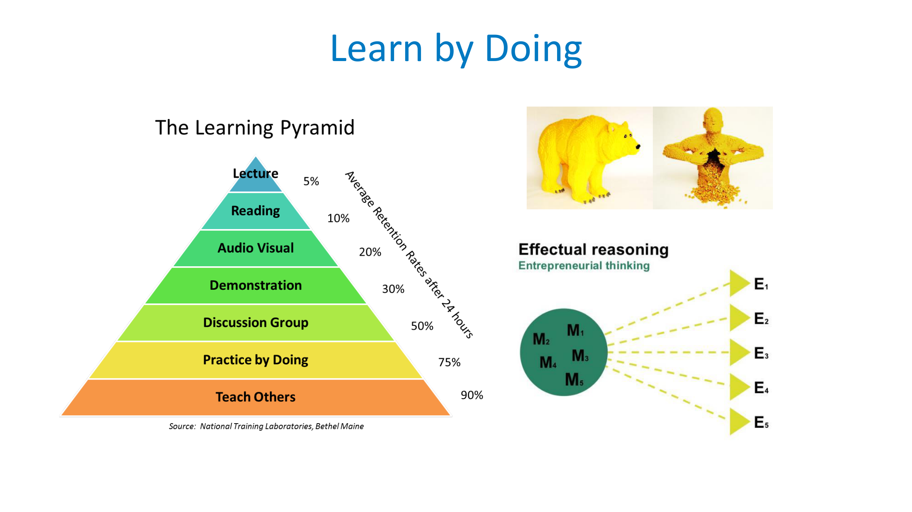
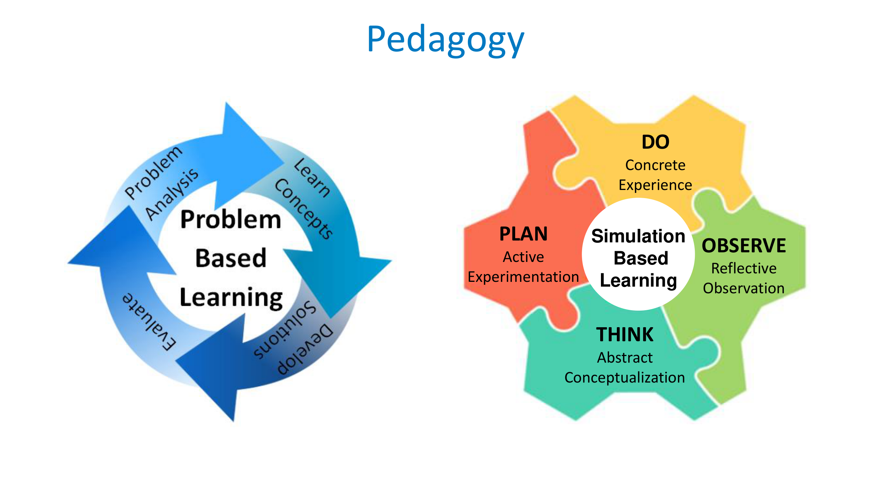

Presented at the Summer Biomechanics, Bioengineering, and Biotransport Conference (SB3C 2020). Developed for BME 5313 / BME 5303: Engineering Applications in Orthopedics at Lawrence Tech. Bridging clinical treatment procedures, hands-on surgical tooling, and entrepreneurial implant engineering.

Transforming passive textbook memorization into active tactile problem-solving and clinical translation.

Traditional lecture format yields an average 24-hour retention rate of only 5%. In contrast, Practice by Doing achieves 75% and Teaching Others achieves 90% retention. By giving engineering students actual clinical surgical tools, they gain immediate intuition for bone cortical density, screw stripping torque, and instrument mechanics.

The course unites two synchronized cycles: Problem-Based Learning (PBL) (Problem Analysis → Learn Concepts → Develop Solutions → Evaluate) and Simulation-Based Learning (SBL):
Weekly progression in Engineering Applications in Orthopedics, blending clinical pathophysiology with active surgical simulations.
| Week | Biomechanical & Clinical Topic | In-Class Simulation / Surgical Activity | Key Competencies |
|---|---|---|---|
| Week 1 | Introduction & Virtual Orthopedic Surgery | Virtual Hip Surgery · HTC Vive VR + 3D Systems Touch Haptic Arm | Robotic surgery, tactile force feedback, spatial coordinates |
| Week 2 | Sports Injuries & Musculoskeletal Anatomy | A Build Lower Extremity · Synthetic bones + foam muscles | Anatomic lines of action, moment arms, soft tissue wrapping |
| Week 3 | Ligament Tears & Knee Kinematics | B ACL Reconstruction · Arthroscopic drilling & interference screws | Tunnel isometry, graft tensioning, bioabsorbable screw fixation |
| Week 4 | Cartilage Degeneration & Osteoarthritis | C Total Hip Replacement (THA) · Reaming & femoral stem press-fit | Neck osteotomy, canal broaching, press-fit stability, impingement |
| Week 5 | Bone Fractures & Trauma Fixation | D Fracture Fixation · Dynamic compression plating & cortical screws | ORIF plating, bicortical purchase, interfragmentary compression |
| Week 6 | Spinal Column & Deformity Correction | E Spine Fixation · Pedicle cannulation & stabilization rods | Pedicle screw alignment, rod contouring, spinal rigidity |
| Week 7 | Skeletal Development & Bone Mechanics | Material Testing · Synthetic cortical and cancellous bone testing | Young's modulus, yield strength, anisotropy, viscoelasticity |
| Week 8 | Implant Stability & Osseointegration | F Dental Implants · Versah Osseodensification burs | Primary stability, insertion torque (N·cm), bone densification |
| Week 9 | Custom Implants & 3D Medical Printing | G Mimics Skull Plate · Patient DICOM CT segmentation | Materialise Mimics & 3-matic, 3D printing, surgical margin fit |
| Week 10 | Medical Device Innovation & IP | Opportunity Creation Project · Clinician problem pitch | Clinical unmet needs, stakeholder discovery, FDA 510(k) strategy |
| Week 11 | Computational Biomechanics Modeling | Advanced Seminar · Finite element modeling of bone-implant interfaces | FEA stress distributions, contact mechanics, fatigue life |
| Week 12 | Prosthetics & Orthotics | Industry Tour & Field Experience · Orthopedic manufacturing facility | CAD/CAM fabrication, socket biomechanics, patient fitting |
| Week 13 | Injury Prevention & Rehabilitation | Clinical Tour & Observation · Sports medicine & orthopaedic clinic | Gait analysis, functional testing, rehabilitation protocols |
| Week 14 | Medical Imaging & Diagnostics | Hospital Tour & Radiology Suite · Clinical MRI, CT, and fluoroscopy | Radiation physics, multi-planar reconstruction, pre-op planning |
| Week 15 | Concussion Biomechanics & Synthesis | Final Research Seminar & Project Symposium | Brain tissue mechanics, helmet standards, regulatory pathway |
Explore the clinical tooling, anatomical models, and biomechanical principles in each hands-on demonstration.
Accelerating medical device engineering through authentic clinical and industrial partnerships.
Pioneered patented Densah® burs that compact and auto-graft bone during osteotomy rather than excavating it. Dr. Salah Huwais and Versah have collaborated with LTU EBL for extensive biomechanical testing and surgical training modules.
Clinician-led orthopaedic innovation group providing clinical advisory, surgical instrumentation, and authentic surgical case studies for student device development.
Provided equipment grants and advanced manufacturing support enabling precision simulation workstations, measurement transducers, and tooling for LTU biomedical labs.
Michigan's premier hardware accelerator housed at Lawrence Tech. Connects student orthopedic design teams with clinical mentors, medical device manufacturers, and seed funding resources.